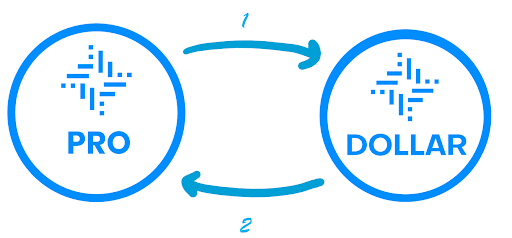
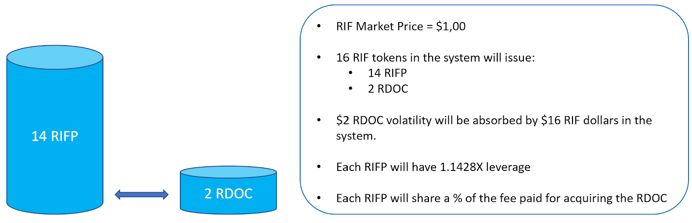
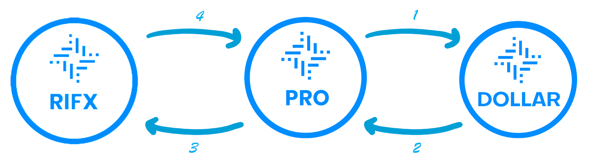
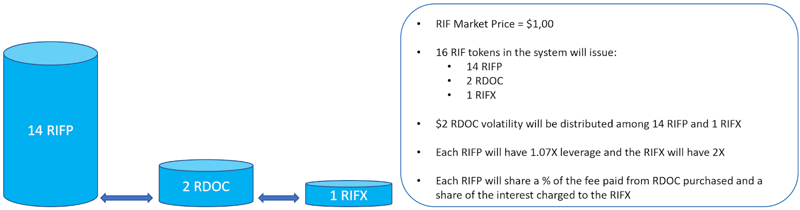
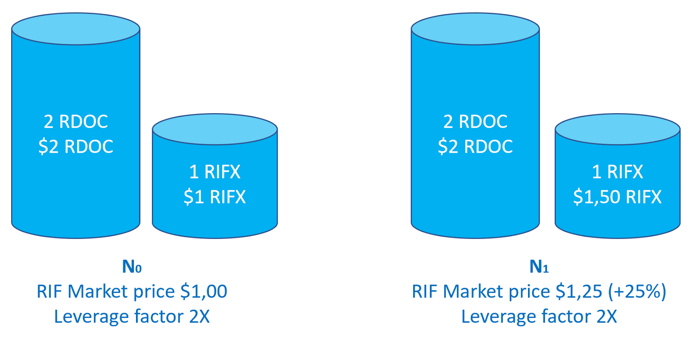
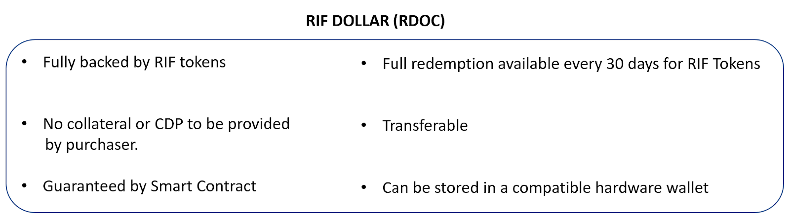
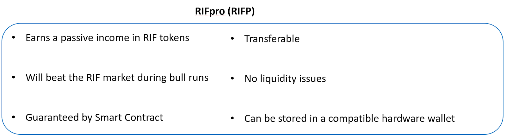
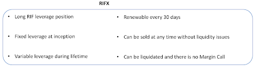

Santiago de Lavallaz著
当社は、RSK Blockchainネットワーク上にMoney on Chain（MOC）によって構築および展開された初のRIF DeFiエコシステムである、RIF on Chain DeFiプラットフォーム（ROC）の開始をお知らせします。
MOCは、ビットコインで担保化された初のDeFiソリューションの一つをリリースしました。これにより、ユーザーはトラストレスな分散化システムとの相互作用が可能です。MOCのビットコイン担保付きのDefiプラットフォームには、（i）ビットコイン保有者がビットコインを出資し、受動的収入を得ることができるようにする、（ii）ビットコインによって担保されたステーブルコインを、価格変動のリスクを軽減する意思のあるユーザーに提供する、（iii）買い持ち（ロングポジション）状態をより長期間維持したいユーザーにビットコイン・レバレッジ資産を提供するなどの様々な主要機能があります。MOCプラットフォームは、仮想化環境においては指折りの堅牢さを誇る分散型金融プラットフォームであることが証明されたばかりです。
MOCは、そのテクノロジーをRIFエコシステムに拡張することにより、RIFトークンに支えられ、RSK Blockchainネットワークに展開されたDefiエコシステムを生み出すための基盤要素を提供しています。これはRIFトークン経済の成長を加速する原動力の一つになると予想されるため、コミュニティにとって重要なマイルストーンとなります。以下でさらに詳しく説明しますが、RIF on Chain（ROC）は、RIFに裏付けされた商品を取引するための高速で安全なプラットフォームを提供するとともに、RIFトークン保有者が様々な方法で受動的収入を生成する機会を提供します。
各資産の詳細について掘り下げる前に、この短い動画を見てMoney on Chain（MOC）DeFiプラットフォームの背後にあるメカニズムを理解することは有意義です。
ユーザーのニーズに応じてさまざまな目的を果たすために開発されたChain Defiプラットフォーム上のRIFは、相互作用する3つの主要な資産で構成された形で開始されることになります。これらには、（i）米ドルに固定されており、RIFトークンで完全に担保された資産担保証券RIFドル（RDOC）、（ii）トークン・ステーク・モデルを通じてRDOCとRIFXの作成を可能にするエコシステムの要であるRIFpro（RIFP）トークン、（iii）RIF Token価格変動のリスクに晒されているレバレッジ取引資産であるRIFXが含まれます。
ROCプラットフォームにアクセスして相互作用するための最初のステップは、ユーザーがNiftyやMetamaskなどの互換性のあるハードウェア・ウォレットにRIFトークンを所持していることを確認することです。RIFトークンは、KuCoin、Coinbene、Bitfinex、Bithumb、Liquid、MXCなどの取引所で購入できます。
ユーザーがRIFトークンを手に入れると、RDOCステーブルコイン、RIFproまたはRIFXのいずれかと相互作用が可能になります。これらの各プラットフォーム資産について、さらに掘り下げていきましょう。
RDOCの設計と機能について学ぶ前に、既存のステーブルコインの目的と構造を認識することは有意義です。ステーブルコインは、急激な下落が市場全体に打撃を与える場合や、「下落が市場全体のポートフォリオを少しずつ食い荒らしている」場合に利益を固定する時などにおいて、仮想トレーダーや投資家がリスクを軽減し、市場変動を回避するために価値を安定的に保蔵するよう設計されています。ステーブルコインは、価格変動のリスクに晒されることなく仮想通貨とブロックチェーン技術を使用することのメリットを享受したい場合に必要不可欠です。価格変動が問題となる領域の例には以下があります：
ステーブルコインは、以下の3グループに分けることができます：
上記のステーブルコインの分類を踏まえると、RIFドルのステーブルコイン（RDOC）は、RIFトークンを担保として使用することに相当する仮想通貨担保型ステーブルコインを構成します。
このステーブルコインが他の仮想通貨担保型ステーブルコインと異なる点は、RDOCが発行されるメカニズムです。Money on Chainの数学的観点は詳述しませんが（MOCホワイトペーパーで詳述されています）、プラットフォームで一定量のRIFpro（RIFP）が出資されている場合は、常にRDOCステーブルコインが作成されます。このことは、RDOCを手に入れるためにユーザーが自らRIFPを出資しなければならないこというとではなく、RDOCが生成されてプラットフォームで手に入れることができるようになる前に、RIFPがプラットフォームで（すべてのユーザーによって）出資される必要があることを意味します。したがって、RIFPの最小出資閾値が満たされる場合は常に、すべてのユーザーがRDOCを手に入れてハードウェア・ウォレットに保存し、かつ別のユーザーに譲渡したりRIFマーケットプレイスで販売されている商品の購入への利用を可能にするために、ROCプラットフォームは、自動的にRDOCの生成を開始します。ここで理解すべき重要なポイントは、RIFトークンがRDOCを生成するための重要な構成要素であるということです。
ここでは生じるのは、RDOCステーブルコインは、システムの先行物としてRIFトークンにどのように役立つかという疑問です。

RIFPとRDOCの間のランダムな数学的関係を使用する例として、プラットフォームに存在するのが16RIFトークンの場合における、RIFPとRDOCの間の往復論法を以下に示します。

例えば、システムに存在する16RIFトークンがRIF市場価格で1.00ドルの場合、14RIFPが発行され、続いて2ドル相当のRDOCが発行され、2ドルRDOCの価格変動を吸収するシステムにおいて16ドルになります。発行された2ドル分の価格変動はRIFPに分配され、その結果、レバレッジ係数はRIFP出資毎に1.1428倍、すなわち、[$16
/ ($16 - $2)] => 14.28%ということになります。
使用されている数値と値は一例にすぎず、実際のROC値に基づいていないことに留意してください。
しかし、RIFPの本質は、RIFPが仕様によってレバレッジ商品になったことによる結果ではなく、RIFトークンの保有者が、主にプラットフォームと相互作用するユーザーが支払った手数料から受動的収入を生成できるようにすることです。したがって、長期的投資を行っているポジションでレバレッジを維持することは有利であると考えられますが（原資産価格が回復した場合）、特に市場が低迷している場合はリスクも伴います。そのため、RIFPの仕様は、（a）RIF Tokenが受け取る手数料だけでなく、（b）ROCプラットフォームの「レバレッジ資産」と呼ばれる、当該レバレッジの大部分をRIFXに移行することによって追加の価格変動を相殺することを目的としています。
前述のことから、RIFトークンは、RDOCステーブルコインからRIFXに継承されたレバレッジのほとんどを「架空販売」するため、下の図に示すように、ROC DeFiプラットフォームの経済循環全体を閉鎖することになります：

RIFXは、30日毎に更新するように設定されたレバレッジ商品であり、RIFトークンの市場価格に変動がある場合は、常に投資家と投機家に利益（または損失）を活用するためのツールを提供します。要約すると、RIFXは毎月更新されるレバレッジ資産です。ここで生じる疑問があります：
レバレッジ係数はどうなるかということです。契約期間中は固定でしょうか？
RIFXは、各契約の開始時に2倍の固定レバレッジ乗数を有しており、プラットフォームで利用可能なRDOCステーブルコインの量や市場でのRIFの値動きなど、様々な変数に応じて30日間の契約期間中に変化する可能性があります。このレバレッジの変動性を明確にすることは重要です。つまり、RIFXを取得する場合（契約開始時に取得される場合を除く）、割り当てられるレバレッジは2倍ではない可能性が高いため、取引を開始する前にDefiプラットフォームのRIFXウォレットセクションまたはメトリック・セクションでレバレッジ係数を確認することが基本であり、かつ強く推奨されているということです。また、RIFXと従来のレバレッジ資産（例えば、ETFなど）との違いに注意することも重要です。後者においては、殆どの場合レバレッジ比率は永久的に固定です。
RIFPとRDOCの関係を示す乱数を使用した前の例に続き、RIFXを数式に代入し、ROCプラットフォームの経済的な連鎖を閉じます。

例えば、システムに存在する16RIFトークンがRIF市場価格で1.00ドルの場合、14RIFP、2ドル相当のRDOCが発行され、続いて1RIFXが発行されます。2ドル相当のRDOC価格変動は、14RIFPと1RIFXに分配されます。つまり、前の例では、14.28％（14RIFPを2RDOCで除算
= 2/14 = 1/7 =
14.28%）でしたが、今回は、14RIFPに1RDOCの価格変動、1RIFXに1RDOCの価格変動ということになります。これにより、RIFPの価格変動は1.071倍の半分に減少し、システムがRIFXの2倍のレバレッジ乗数で開始できるようになります。
使用されている数値と値は一例にすぎず、実際のROC値に基づいていないことに留意してください。
要約すると、RIFトークンはプラットフォームの基盤商品として機能し、RDOC購入者が支払う手数料とRIFXトレーダーがレバレッジポジションで支払う金利の恩恵を受けます。RIFトークンは、ステーブルコインから吸収された価格変動のわずか一部（「レバレッジ」に換算）のリスクにも晒され、そのことで、RIFトークンが価値を増やす限りは、長期的な利益を享受できるでしょう。
RIFX契約の満了時（30日毎）にはステーブルコイン・ポジションの全額償還（RIFトークン向けのRDOCステーブルコインの販売またはそれらの譲渡）を受けることが可能で、未決済のRIFX額に応じて、契約の存続期間中に部分的または完全な償還が可能であることは大いに評価に値します。このことの背後にある理論的根拠は、トークン価格が市場で上昇した場合、RDOCステーブルコインは、レバレッジされた利益をRIFXに「支払う」ことになるということです。したがって、RIFXの契約期間中は、エコシステムの健全性と機能性を維持するために、プラットフォーム内で問題となっているRDOCステーブルコインの最小額を確保することが重要です。しかし、上記で説明したように、RDOCのステーブルコインには償還制限がある場合がありますが、RIFXはいつでも販売できるため、この商品の取引を希望するトレーダーにさらなる柔軟性を提供します。
以下の例を見てみましょう：

上記のように、契約開始時（N0）において、システムには2RDOCと1RIFXがあり、RIF市場価格は100ドルです。N1では、トークンの価格が25%上昇して1.25ドルになり、2倍のレバレッジによりRIFXポジションが50%上昇しました。RDOCステーブルコインが本質的に安定しているとすると、相場上昇から利益を得ることはなく、それらの利益をRIFXに移行し、そのレバレッジを「支払う」でしょう。ある時点での償還合計額によりRIFXのレバレッジを再び高くするためのRDOCの存在は、システム全体を危険に晒してしまうことになります。
使用されている数値と値は一例にすぎず、実際のROC値に基づいていないことに留意してください。
本投稿前半の結論としては、RIF on Chain（ROC）DeFiプラットフォームとの相互作用を取り巻く運用面について理解することは不可欠だということです。
トークン保有者は、RIFトークンを取得したら、取得したRIFをMetaMaskまたはNiftyウォレットに移行する必要があります。MetaMaskを使用する場合、RIF保有者は、アプリにRIFトークンを転送するためのRSKネットワークの適切な設定を所有している必要があります。MetaMaskウォレットの設定の詳細については、以下のリンクを参照してください：
https://developers.rsk.co/develop/apps/wallets/metamask/
最後の手順として、ユーザーはこのリンク をクリックしてウォレットとプラットフォームの自動接続を承認することにより、MetaMask/NiftyがチェーンプラットフォームのRIFと相互作用できるようにする必要があります。
RIFドル（RDOC）
RDOCは米ドルに対して1：1で固定されたステーブルコインであり、スマート・コントラクトによって保証されています。ユーザーは、契約満了時にRDOCの全ポジションを、または契約の有効期間中に、交換可能なRDOCステーブルコインの可用性に応じて、一部を償還することができます。
RDOCのもう1つの重要な機能は、RDOCがRIFトークンによって完全に担保されており、ユーザーは他のDeFiプラットフォームのように担保やCDPを提供せずに、プラットフォームで直接トークンを取得できることです。
RDOCトークンはユーザー間で譲渡が可能で、サービスや商品、特にRIFマーケットプレイスで販売されるdAppsブロックチェーン商品の購入に使用できます。トークンのもう一つの特徴は、互換性のある任意のハードウェア・ウォレットに格納できることです。

RIFpro （RIFP）
RIFPは、RIFの価格変動に加えて、RDOCステーブルコインから享受する少量のレバレッジを反映するトークンです。RIF Tokenは、ROCプラットフォームからRDOCユーザーとRIFXトレーダーに請求される取引手数料の割合から利益を享受します。この理由により、RIFPは、RIF Tokenのポジションの最小レバレッジで受動的収入を得たいRIF保有者に適したトークンです。

RIFX
RIFXは、RIFレバレッジ分散型ロング・ポジションです。この商品は、30日毎に更新される自動化されたスマート・コントラクトに基づいて、契約期間初期は2倍のレバレッジ係数を有しており、その後はRIFトークンの価格やROCプラットフォームのRDOCステーブルコインの額などの特定の変数に基づいて変動するレバレッジを有します。ユーザーは、レバレッジ資産の取引に関連するリスクを認識し、ポジションが清算される可能性があることを理解する必要があります。現在のバージョンのROCプラットフォームには、追加証拠金請求通知はありません。RIFX商品は、RDOCステーブルコインのように契約満了まで待つ必要がなく、いつでも販売が可能です。

ここまで、Money on Chainによって生み出され、運営される素晴らしいROC DeFiエコシステムについて説明してきました。その上で、すべてのRIF保有者とRIFユーザーがこのシステムを採用し、このシステムが提供するに違いない利益と恩恵を開拓することをお勧めします。